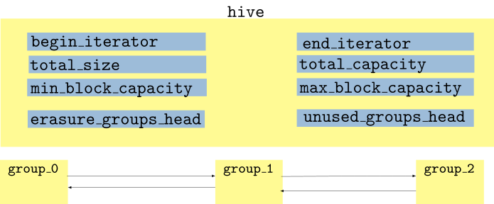

%load_ext itikzIntroduction
hive is a formalization, extension and optimization of what is typically known as bucket arrays in game programming circles. Similar data-structures are used in high-performance computing, high performance trading, 3D-simulation, particle simulations, robotics fields.
In a typical game engine, elements within one container often refer to elements in other separate containers. Data is heavily interlinked, iterated often(everytime a frame is rendered) and changing continuously. Most games have an Entity class. Entities link to shared resources such as texture objects, sound data etc. These shared resources are usually located in separate containers so that they can be reused by multiple entities. Entities in turn are referenced by other superstructures within a game engine, such as quadtrees / octrees, level structures and so forth.
Erasing entities or otherwise removing or deactivating objects occurs frequently in game and in realtime (for example, a wall gets destroyed and no longer is required to be processed by the game engine). Creating new objects and adding them into the gameworld on-the-fly is also common (for example, a new enemy is spawned). While this is all happening, the links between entities, shared resources and superstructures such as levels and quadtrees, must stay valid in order for the game to run.
We don’t always know in advance how many elements there will be in a container at the beginning of development, or even at the beginning of a level during playback - an example of this being MMORPG(massively multiplayer online role playing games). In a MMORPG, the number of game entities fluctuates based on how many players are playing.
If we use vector as a container to store game entities, it loses pointer validity to elements within it upon insertion, and pointer/index validity upon erasure.
We desire a container that allows constant-time insertion / erasure, fast iteration performance, yet offers pointer stability.
Workarounds for the failings of std::vector
To meet these requirements, game developers tend to either a) develop their own custom containers or b) develop workarounds for the failings of std::vector.
Tombstone
A tombstone is just a placeholder or marker used in data structures to indicate that a piece of that has been deleted, rather than immediately erasing it. We could, thus, use a boolean flag (or similar) to indicate the inactivity of an object (as opposed to actually erasing the object from the vector). When erasing, we simply adjust the boolean flag, and when iterating, items with the boolean flag set are skipped. External elements refer to elements within the container via indexes rather than pointers. An advantage of this approach is fast erasure.
Consider the boolean skipfield accompanying an array of 10 integers of the below form:
This means that the 2nd, 3rd, 4th and 8th integers must be respectively skipped during the processing of the array. The pseudocode for a single iteration between two unskipped objects in a sequence of integers using a boolean skipfield could be implemented as follows.
size_t advance(size_t i){
do{
i += 1;
}while(S[i])
}Boolean skipfields come with two downsides. As you can see, branching code is necessary for every skipfield read, in order to determine whether to proces or skip an element. This large amount of branching can cause performance issues on processors with deep pipelines and poor branch prediction performance. Also, the standard library requires that a containers support \(O(1)\) constant-time ++iter iteration performance. An unpredictable number of reads from the skipfield are necessary to ascertain the next unskipped object.
Utilizing a vector (or array) of group structs
The reference implementation of hive uses a doubly linked-list of group structs. A group consists of (a) a dynamically allocated memory block (b) a dynamically-allocated skipfield and (c) memory block meta data such as size and capacity.
template<typename T>
struct group{
skipfield_pointer_type skipfield; // skipfield pointer
aligned_struct_pointer_type elements; // pointer to memory block
size_t size; // meta-data
size_t capacity;
group* next_group;
group* previous_group;
// ...
};Let’s pause to think, what if we used a vector of group structs instead of a doubly linked-list. When a group becomes empty of elements, it must be removed from the vector of groups, because otherwise you end up with highly-variable latency during iteration due to the need to skip over an unknown number of empty groups when traversing from one non-empty group to the next. Merely erasing the group is not sufficient, as this creates a variable amount of latency during the erasure when the group becomes empty, based on the number of groups after that group which need to be relocated backward in the vector. But, even if you swap the to-be-erased group with the back group, and then pop the to-be-erased group off the back, this would not solve the problem, as iterators require a stable pointer to the group they are traversing in order to traverse to the next group in the sequence. If an iterator pointed to an element in the back group, and the back group was swapped with the to-be-erased group, that iterator would be invalidated.
Using a vector of pointers to group structs
With a vector of pointers to group structs, erasing group still can have high variable latency, but the process of relocating the pointers after the to-be-erased group is cheaper. Also, using the swap-and-pop idiom is still not possible, it would still invalidate an iterator pointing to an element within the back group.
Using a vector of memory blocks
A vector of memory blocks, as opposed to a vector of pointers to memory blocks or a vector of group structs with dynamically allocated memory blocks also don’t work as it would (a) disallow a growth factor in the memory blocks and (b) invalidate pointers to the elements in subsequent blocks when a memory block became empty of elements and was therefore removed from the vector.
A method of skipping erased elements in \(O(1)\) time during iteration
Matt Bentley proposes using low-complexity jump counting(LCJC) pattern to have \(O(1)\) constant-time complexity for iterating from one unskipped element to the next one. LCJC achieves this without without branching statements, which results in better performance on many processors. Let us walk through a couple of easy examples to understand how LCJC works in practice.
Primer on LCJC
We start by establishing few definitions.
Skipfield. By a skipfield, we mean an array of integers accompanying a data-collection (memory block of elements), that is used to skip over certain elements during iteration. We denote it by \(S\).
Node. A single integer within the skip field array. For a boolean skipfield array, this is always either 0 or 1. For an LCJC skipfield, a node aka an element in the skipfield array could be any non-negative integer.
Skipblock. A contigous sequence of skipped nodes within a skipfield. In the following LCJC skipfield:
the nodes at 2nd, 3rd and 4th position form a skipblock. Similarly, the nodes at the 6th, 7th and 8th position form another skipblock.
Start Node. The first node in any skipblock. End Node. The last node in any skipblock. Middle Node. Any node in the skipblock which is not a start or end node.
Iteration
In a boolean skipfield, the skip is only ever of \(1\) node. If S[i] = 1 in the skipfield array, the i-th element is skipped. In the below example, during a forward iteration, each time, we increment the index i, look at the current node in the skipfield array S[i] and if it is 1 instead of 0, we skip the i-th element in the memory block and continue this process until we find an unskipped element.
In contrast, in an LCJC skipfield, a non-zero entry S[i] in the skipfield array S encodes the total number of elements to skipped aka jump size.
In the above example, a forward iteration through the memory block will walk through the elements at indices 0, 3, 4, 5, 6, 9, which correspond to 5, 28, 10, 6, 3, 15 in the memory block. If we were to do a reverse iteration, we will walk through the elements at indices 9, 6, 5, 4, 3, 0, which correspond to the data elements 15, 3, 6, 10, 28 (the same elements as in the forward pass, but in reverse order).
The LCJC update algorithm, as you will soon discover, ensures that the forward and reverse pass is consistent. If you look carefully enough, the start and end nodes of every skipblock in an LCJC skipfield both encode the total number of elements to skip (and are equal).
In equation form, forward iteration can be expressed as follows:
\[\begin{align} i := i + 1 \end{align}\]
\[\begin{align} i := i + S[i] \end{align}\]
Similarly, iterating in the reverse can be expressed as:
\[\begin{align} i := i - 1 \end{align}\]
\[\begin{align} i := i - S[i] \end{align}\]
Changing a skipfield from unskipped to skipped
Let’s think about what we need to do, if we want to change a skipfield node from unskipped to skipped.
There are \(4\) potential outcomes in this situation:
If both left and right nodes are non-zero
This means that the current node is between two skipblocks and we must join those skipblocks together. Intuitively, the procedure for doing so must be as follows:
The left neighbour of the current node in the skipfield array is the end node of the LHS skipblock. Similarly, the right neighbour of the current node in the skipfield array is the start node of the RHS skipblock.
If we subtract S[i-1] from the current node’s index i, we reach the start node of the left skipblock. Similarly, if we S[i+1] to the current node’s index i, we reach the end node of the right skipblock.
We want to merge the left and right skipblocks into a single contiguous skipblock having length = length of the left skipblock + length of the right skipblock + 1 (current node). Thus, we set the left skipblock’s start node and the right skipblock’s end node to the value of the left node + the value of the right node + 1.
\[\begin{align} j &:= S[i-1] \\ k &:= S[i+1] \\ S[i-j] = S[i+k] &:= j + k + 1 \end{align}\]
If only the left node is non-zero
This means that the current node has an adjacent skipblock on the left, in which case, we simply add the current node to that skipblock. Intuitively, the procedure for doing so should be as follows:
If we subtract S[i-1] from the current node’s index i, we reach the start node of the left skipblock. We set the value of the left skipblock’s start node and the current node, to the left node’s value + 1.
\[\begin{align} j &:= S[i-1] \\ S[i-j] := S[i] &:= j + 1 \end{align}\]
If only the right node is non-zero
This means that the current node has an adjacent skipblock on the right. Similar, to the above logic, we can perform the following updates:
\[\begin{align} k &:= S[i+1] \\ S[i+k] := S[i] &:= k + 1 \end{align}\]
If both left and right nodes are zero
This means the node in question has no skipblocks on either side, in which case we create a new skipblock of \(1\) nodes. We simply set the value of the current node to \(1\).
\[\begin{align} S[i] := 1 \end{align}\]
Changing a skipfield from skipped to unskipped
The node to be modified is the end node of the skipblock
In this case, we truncate the skipblock to the left. Intuitively, the process is as follows -
Subtract \(1\) from the current node’s value and store that result as \(j\). It’s going to be new length of the skipblock to the left.
Subtract \(j\) from the current node’s index to find the index of the skipblock’s start node.
Set the start node of the skipblock and the node to the left of the current node (the new end node of the skipblock) to \(j\).
Set the current node to \(0\).
\[\begin{align} j &:= S[i] - 1\\ S[i-j] := S[i-1] &:= j\\ S[i] &:= 0 \end{align}\]
The node to be modified is the start node of a skipblock
Here we just truncate the skipblock to the right.
\[\begin{align} j &:= S[i] - 1\\ S[i+j] := S[i+1] &:= j \\ S[i] &:= 0 \end{align}\]
The node to be modified is both the start and end node of the skipblock
In this scenario, the current node is a \(1\)-node skipblock and can simply be set to zero.
\[ S[i] := 0 \]
The node to be modified is neither the start nor the end of a skipblock
In this scenario, the node in question is a middle node and the skipblock must be split into two skipblocks as follows:
Subtract the current node’s index from the end node’s index. This is going to be the length of the right skipblock. So, we set the value of the node to the right of the current node, and the end node, to the result.
Subtract the start node’s index from the current node’s index and set the value of the node to the left of the current node, and the start node, to the result.
Set the value of the current node to \(0\).
\[ \begin{align} S[e] := S[i+1] &:= e - i\\ S[s] := S[i-1] &:= i - s\\ S[i] &:= 0 \end{align} \]
Low-level design
The hive has a book-keeping data-structure that has the following member-fields:
- a pointer
unused_groups_headto the head of a singly linked-list of all reserved memory blocks created byreserve()or retained byerase()/clear(). - a pointer
erasure_groups_headto the head of a doubly linked-list of all groups that have erased element memory locations available for re-use. - a pair of
beginandenditerators. These iterators are of the typehive_iterator. The state of ahive_iteratorconsists of (group_pointer,element_pointer,skipfield_pointer).
Show the code
%%itikz --temp-dir --tex-packages=tikz,color --tikz-libraries=arrows --implicit-standalone
\begin{tikzpicture}[x=0.75pt,y=0.75pt,scale=2,transform shape]
%uncomment if require: \path (0,348); %set diagram left start at 0, and has height of 348
\pagecolor{white}
%Rounded Rect [id:dp6538964555567777]
\draw [draw opacity=0][fill={rgb, 255:red, 252; green, 249; blue, 216 } ,fill opacity=1 ] (119,322) .. controls (119,322) and (119,322) .. (119,322) -- (536,322) .. controls (536,322) and (536,322) .. (536,322) -- (536,93.75) .. controls (536,93.75) and (536,93.75) .. (536,93.75) -- (119,93.75) .. controls (119,93.75) and (119,93.75) .. (119,93.75) -- cycle ;
%Rounded Rect [id:dp5461097304572518]
\draw [draw opacity=0][fill={rgb, 255:red, 252; green, 249; blue, 216 } ,fill opacity=1 ] (120,75) .. controls (120,75) and (120,75) .. (120,75) -- (222,75) .. controls (222,75) and (222,75) .. (222,75) -- (222,20.75) .. controls (222,20.75) and (222,20.75) .. (222,20.75) -- (120,20.75) .. controls (120,20.75) and (120,20.75) .. (120,20.75) -- cycle ;
%Rounded Rect [id:dp29614350157504765]
\draw [draw opacity=0][fill={rgb, 255:red, 252; green, 249; blue, 216 } ,fill opacity=1 ] (286.5,73.5) .. controls (286.5,73.5) and (286.5,73.5) .. (286.5,73.5) -- (388.5,73.5) .. controls (388.5,73.5) and (388.5,73.5) .. (388.5,73.5) -- (388.5,19.25) .. controls (388.5,19.25) and (388.5,19.25) .. (388.5,19.25) -- (286.5,19.25) .. controls (286.5,19.25) and (286.5,19.25) .. (286.5,19.25) -- cycle ;
%Rounded Rect [id:dp6819794481661482]
\draw [draw opacity=0][fill={rgb, 255:red, 252; green, 249; blue, 216 } ,fill opacity=1 ] (453,73.5) .. controls (453,73.5) and (453,73.5) .. (453,73.5) -- (555,73.5) .. controls (555,73.5) and (555,73.5) .. (555,73.5) -- (555,19.25) .. controls (555,19.25) and (555,19.25) .. (555,19.25) -- (453,19.25) .. controls (453,19.25) and (453,19.25) .. (453,19.25) -- cycle ;
%Straight Lines [id:da3220375227310204]
\draw (221.5,60.75) -- (283.5,60.27) ;
\draw [shift={(286.5,60.25)}, rotate = -180.44] [fill={rgb, 255:red, 0; green, 0; blue, 0 } ][line width=0.08] [draw opacity=0] (8.93,-4.29) -- (0,0) -- (8.93,4.29) -- cycle ;
%Straight Lines [id:da29783198012120427]
\draw (388,61.25) -- (450,60.77) ;
\draw [shift={(453,60.75)}, rotate = -180.44] [fill={rgb, 255:red, 0; green, 0; blue, 0 } ][line width=0.08] [draw opacity=0] (8.93,-4.29) -- (0,0) -- (8.93,4.29) -- cycle ;
%Straight Lines [id:da48747326531550605]
\draw (285.5,41.25) -- (224,41.25) ;
\draw [shift={(221,41.25)}, rotate = 0] [fill={rgb, 255:red, 0; green, 0; blue, 0 } ][line width=0.08] [draw opacity=0] (8.93,-4.29) -- (0,0) -- (8.93,4.29) -- cycle ;
%Straight Lines [id:da6807902738162247]
\draw (452,41.25) -- (390.5,41.25) ;
\draw [shift={(387.5,41.25)}, rotate = 0] [fill={rgb, 255:red, 0; green, 0; blue, 0 } ][line width=0.08] [draw opacity=0] (8.93,-4.29) -- (0,0) -- (8.93,4.29) -- cycle ;
% Text Node
\draw [color={rgb, 255:red, 255; green, 255; blue, 255 } ,draw opacity=1 ][fill={rgb, 255:red, 185; green, 217; blue, 253 } ,fill opacity=1 ] (135.25,313.12) -- (293.25,313.12) -- (293.25,221.12) -- (135.25,221.12) -- cycle ;
\draw (214.25,300.0) node [align=left] {\begin{minipage}[lt]{104.38pt}\setlength\topsep{0pt}
{\ttfamily begin\_iterator}
\end{minipage}};
% Text Node
\draw [color={rgb, 255:red, 255; green, 255; blue, 255 } ,draw opacity=1 ][fill={rgb, 255:red, 185; green, 217; blue, 253 } ,fill opacity=1 ] (134.75,222.62) -- (292.75,222.62) -- (292.75,191.62) -- (134.75,191.62) -- cycle ;
\draw (213.75,207.12) node [align=left] {\begin{minipage}[lt]{104.38pt}\setlength\topsep{0pt}
{\ttfamily total\_size}
\end{minipage}};
% Text Node
\draw [color={rgb, 255:red, 255; green, 255; blue, 255 } ,draw opacity=1 ][fill={rgb, 255:red, 185; green, 217; blue, 253 } ,fill opacity=1 ] (134.5,191.12) -- (293.5,191.12) -- (293.5,160.12) -- (134.5,160.12) -- cycle ;
\draw (214,175.62) node [align=left] {\begin{minipage}[lt]{105.4pt}\setlength\topsep{0pt}
{\ttfamily min\_block\_capacity}
\end{minipage}};
% Text Node
\draw [color={rgb, 255:red, 255; green, 255; blue, 255 } ,draw opacity=1 ][fill={rgb, 255:red, 185; green, 217; blue, 253 } ,fill opacity=1 ] (353.25,221.12) -- (511.25,221.12) -- (511.25,190.12) -- (353.25,190.12) -- cycle ;
\draw (432.25,205.62) node [align=left] {\begin{minipage}[lt]{104.38pt}\setlength\topsep{0pt}
{\ttfamily total\_capacity}
\end{minipage}};
% Text Node
\draw [color={rgb, 255:red, 255; green, 255; blue, 255 } ,draw opacity=1 ][fill={rgb, 255:red, 185; green, 217; blue, 253 } ,fill opacity=1 ] (353.75,189.12) -- (511.75,189.12) -- (511.75,158.12) -- (353.75,158.12) -- cycle ;
\draw (432.75,173.62) node [align=left] {\begin{minipage}[lt]{104.38pt}\setlength\topsep{0pt}
{\ttfamily max\_block\_capacity}
\end{minipage}};
% Text Node
\draw [draw opacity=0][fill={rgb, 255:red, 213; green, 248; blue, 174 } ,fill opacity=1 ] (152.25,286) -- (239.25,286) -- (239.25,266) -- (152.25,266) -- cycle ;
\draw (195.75,276) node [font=\footnotesize] [align=left] {\begin{minipage}[lt]{56.1pt}\setlength\topsep{0pt}
{\footnotesize \ttfamily group\_ptr}
\end{minipage}};
% Text Node
\draw [draw opacity=0][fill={rgb, 255:red, 213; green, 248; blue, 174 } ,fill opacity=1 ] (151.75,265) -- (238.75,265) -- (238.75,245) -- (151.75,245) -- cycle ;
\draw (195.25,255) node [font=\footnotesize] [align=left] {\begin{minipage}[lt]{56.1pt}\setlength\topsep{0pt}
{\footnotesize \ttfamily skipfield\_ptr}
\end{minipage}};
% Text Node
\draw [draw opacity=0][fill={rgb, 255:red, 213; green, 248; blue, 174 } ,fill opacity=1 ] (151.25,243.5) -- (238.25,243.5) -- (238.25,223.5) -- (151.25,223.5) -- cycle ;
\draw (194.75,233.5) node [font=\footnotesize] [align=left] {\begin{minipage}[lt]{56.1pt}\setlength\topsep{0pt}
{\footnotesize \ttfamily element\_ptr}
\end{minipage}};
% Text Node
\draw [color={rgb, 255:red, 255; green, 255; blue, 255 } ,draw opacity=1 ][fill={rgb, 255:red, 185; green, 217; blue, 253 } ,fill opacity=1 ] (352.75,314.62) -- (510.75,314.62) -- (510.75,222.62) -- (352.75,222.62) -- cycle ;
\draw (431.75,300.0) node [align=left] {\begin{minipage}[lt]{104.38pt}\setlength\topsep{0pt}
{\ttfamily end\_iterator}
\end{minipage}};
% Text Node
\draw [draw opacity=0][fill={rgb, 255:red, 213; green, 248; blue, 174 } ,fill opacity=1 ] (368.75,287.5) -- (455.75,287.5) -- (455.75,267.5) -- (368.75,267.5) -- cycle ;
\draw (412.25,277.5) node [font=\footnotesize] [align=left] {\begin{minipage}[lt]{56.1pt}\setlength\topsep{0pt}
{\footnotesize \ttfamily group\_ptr}
\end{minipage}};
% Text Node
\draw [draw opacity=0][fill={rgb, 255:red, 213; green, 248; blue, 174 } ,fill opacity=1 ] (368.25,266.5) -- (455.25,266.5) -- (455.25,246.5) -- (368.25,246.5) -- cycle ;
\draw (411.75,256.5) node [font=\footnotesize] [align=left] {\begin{minipage}[lt]{56.1pt}\setlength\topsep{0pt}
{\footnotesize \ttfamily skipfield\_ptr}
\end{minipage}};
% Text Node
\draw [draw opacity=0][fill={rgb, 255:red, 213; green, 248; blue, 174 } ,fill opacity=1 ] (367.75,245) -- (454.75,245) -- (454.75,225) -- (367.75,225) -- cycle ;
\draw (411.25,235) node [font=\footnotesize] [align=left] {\begin{minipage}[lt]{56.1pt}\setlength\topsep{0pt}
{\footnotesize \ttfamily element\_ptr}
\end{minipage}};
% Text Node
\draw (313.5,333.87) node [align=left] {\begin{minipage}[lt]{27.2pt}\setlength\topsep{0pt}
{\ttfamily hive}
\end{minipage}};
% Text Node
\draw [color={rgb, 255:red, 255; green, 255; blue, 255 } ,draw opacity=1 ][fill={rgb, 255:red, 185; green, 217; blue, 253 } ,fill opacity=1 ] (134,141.12) -- (293,141.12) -- (293,110.12) -- (134,110.12) -- cycle ;
\draw (213.5,125.62) node [align=left] {\begin{minipage}[lt]{105.4pt}\setlength\topsep{0pt}
{\ttfamily erasure\_groups\_head}
\end{minipage}};
% Text Node
\draw [color={rgb, 255:red, 255; green, 255; blue, 255 } ,draw opacity=1 ][fill={rgb, 255:red, 185; green, 217; blue, 253 } ,fill opacity=1 ] (353.5,141.12) -- (512.5,141.12) -- (512.5,110.12) -- (353.5,110.12) -- cycle ;
\draw (433,125.62) node [align=left] {\begin{minipage}[lt]{105.4pt}\setlength\topsep{0pt}
{\ttfamily unused\_groups\_head}
\end{minipage}};
% Text Node
\draw (163.5,71.87) node [align=left] {\begin{minipage}[lt]{28.56pt}\setlength\topsep{0pt}
{\ttfamily group}
\end{minipage}};
% Text Node
\draw (330,70.37) node [align=left] {\begin{minipage}[lt]{28.56pt}\setlength\topsep{0pt}
{\ttfamily group}
\end{minipage}};
% Text Node
\draw (496.5,70.37) node [align=left] {\begin{minipage}[lt]{28.56pt}\setlength\topsep{0pt}
{\ttfamily group}
\end{minipage}};
\end{tikzpicture}
Each group consists of:
- a
+--------------------------------------------------------------------+
| skipfield ------------> [skipfield array] |
| next_group / previous_group // doubly linked list of groups |
| elements --------------> [element storage array] |
| free_list_head index of most-recently-erased skipblock |
| capacity // element slots in this group |
| size // currently-active (non-erased) elems |
| erasures_list_next_group -----> |
| erasures_list_previous_group -----> |
| |
| group_number ordinal, used for iterator <,>,<=,>= |
+--------------------------------------------------------------------+
-- The "groups with erasures" list (a second, independent thread) --
hive.erasure_groups_head
|
v
+==============+ erasures_list_next_group +==============+
| group #2 | ----------------------------> | group #0 | --> NULL
| (has erasures)| <---------------------------- |(has erasures)|
+==============+ erasures_list_previous_group +==============+
group #1 is NOT in this list -- it has no erased slots currently.
This is how insert() finds a reusable slot in O(1), without
scanning every group's skipfield.
-- Inside one group: elements[] + skipfield[] + free list --
index: 0 1 2 3 4 5 6 7
+----+----+----+----+----+----+----+----+
elements[]: | A | XX | XX | XX | D | XX | F | XX | XX = erased slot
+----+----+----+----+----+----+----+----+
+----+----+----+----+----+----+----+----+----+
skipfield[]: | 0 | 3 | .. | 3 | 0 | 1 | 0 | 1 | 0 | (n+1 nodes,
+----+----+----+----+----+----+----+----+----+ extra 0 at end)
active jump-count run (len 3) active jump(1) active jump(1)
Erased slot's memory is reinterpreted as free-list link data:
elements[1] (first slot of the 3-run skipblock) holds:
[ prev_skipblock_index | next_skipblock_index ]
elements[5] and elements[7] (each a 1-run skipblock) similarly
hold their own prev/next skipblock indices -- chained together
via free_list_head, forming this group's private free list of
reusable skipblocks (separate again from the erasures_list above).